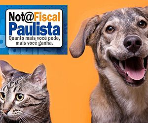

Seja um voluntario e ajude a mudar vidas
Entenda como você pode ajudar:
Creditos para os bixinhos
Digite Notas Fiscais com a gente e apoie a castração de mais animais. Além de tudo você pode fazer de casa!

Sobre a vaga
Uma das fontes de financiamento do projeto Mi & Au é o crédito revertido do programa Nota Fiscal Paulista.
Recebemos (através de doações) diversas notas fiscais de compras e precisamos digitar todo mês para que esses créditos cheguem à nossa organização possibilitando que demos continuidade ao nosso projeto.
Precisamos de voluntários para nos ajudar a digitar essas NFs, é super fácil e você pode fazer de sua casa. 20 minutinhos por dia já nos ajuda muito. Você terá que vir uma vez por mês buscar as NFs na nossa sede em Guarulhos.
E ai, vamos digitar?
ComunicAuAu
Buscamos um voluntário(a) para nos ajudar com nossa comunicação, materiais de divulgação, mídias sociais, etc.
Sobre a Vaga
Buscamos um voluntário(a) para nos ajudar com nossa comunicação, materiais de divulgação, mídias sociais, etc.
Dependendo de seu interesse e habilidade você desenvolver uma outra atividade para colaborar com o nosso trabalho.
Estamos abertos para conversar. Você pode trabalhar de casa, só exigimos seu comprometimento Vem com a gente!
Atendimento
TRIIIMM TRIIIMMM - Que tal dar uma mãozinha para a gente com nosso atendimento aos solicitante da castrações ;)

Sobre a Vaga
TRIIIMM TRIIIMMM - Que tal dar uma mãozinha para a gente com nosso atendimento aos solicitante da castrações ;)
Somos apenas em duas pessoas para coordenar todo o projeto Mi & Au e com o telefone tocando o dia todo fica impossível resolvermos outras questões.
Venha nos ajudar com alguns atendimentos! 1 horinha do seu dia já nos ajuda muito! :)
Te esperamos.